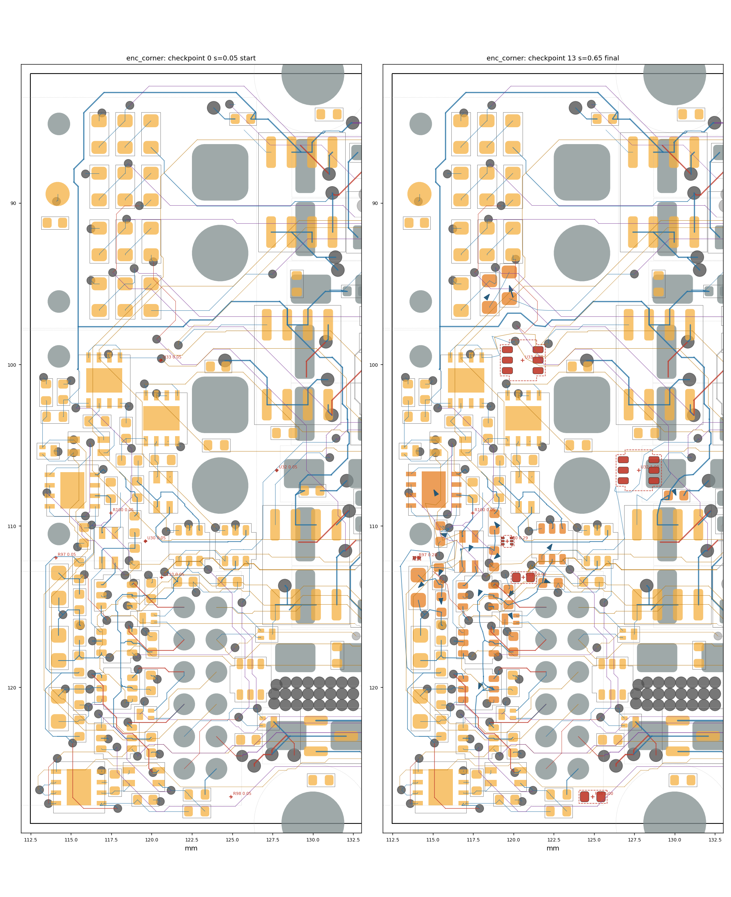

settle run: enc_corner
499 cycles in 529.9 s, progress s = 0.6491; 3/7 ghosts born; 19 parts moved; 25/103 reroutes verified in 6 rounds. Gate: 14/14 checkpoints pass (baseline 2 violations); length caps hit: 0; check_sync: True.
Region [112.4, 81.9, 132.5, 128.5]; rules clearance 0.1 mm, hole 0.254, edge 0.3, guard 0.015.
79 movable parts, 1133 dynamic segments, 1266 nodes, 7 ghosts.
Orange pads = movable parts (dark orange = moved); grey = fixed; red = ghosts at their current scale; blue arrows = part displacement.
Copper by layer: F red, B blue, In1 green, In2 purple, In3 brown, In4 teal; static copper grey.


Gate per checkpoint
| step | s | tag | unconnected | new_violations | static_missing | fixed_moved | ok | new_desc |
|---|
| 0 | 0.05 | start | 103 | 0 | 0 | [] | True | [] |
| 1 | 0.108 | | 103 | 0 | 0 | [] | True | [] |
| 2 | 0.218 | | 103 | 0 | 0 | [] | True | [] |
| 3 | 0.306 | | 103 | 0 | 0 | [] | True | [] |
| 4 | 0.401 | | 103 | 0 | 0 | [] | True | [] |
| 5 | 0.5 | | 103 | 0 | 0 | [] | True | [] |
| 6 | 0.6 | | 103 | 0 | 0 | [] | True | [] |
| 7 | 0.642 | reroute | 103 | 0 | 0 | [] | True | [] |
| 8 | 0.647 | reroute | 103 | 0 | 0 | [] | True | [] |
| 9 | 0.649 | reroute | 103 | 0 | 0 | [] | True | [] |
| 10 | 0.649 | reroute | 103 | 0 | 0 | [] | True | [] |
| 11 | 0.649 | reroute | 103 | 0 | 0 | [] | True | [] |
| 12 | 0.649 | reroute | 103 | 0 | 0 | [] | True | [] |
| 13 | 0.649 | final | 103 | 0 | 0 | [] | True | [] |
Ghosts
| ref | site | scale | drift_x | drift_y | born |
|---|
| U30 | (119.62, 110.94) | 0.2909 | 0.0 | 0.0 | no |
| U32 | (127.76, 106.55) | 1.0 | 0.0 | 0.0 | yes |
| U33 | (120.57, 99.73) | 1.0 | 0.0 | 0.0 | yes |
| R97 | (114.06, 111.96) | 0.2839 | -0.049 | 0.024 | no |
| R98 | (124.92, 126.77) | 1.0 | 0.0 | 0.0 | yes |
| R100 | (117.47, 109.19) | 0.05 | 0.0 | 0.0 | no |
| C110 | (120.62, 113.19) | 0.9186 | 0.0 | 0.0 | no |
Parts moved
| ref | dx | dy | mm | group |
|---|
| R59 | -0.227 | -0.732 | 0.766 | |
| C64 | -0.284 | 0.376 | 0.471 | |
| C60 | -0.343 | -0.106 | 0.359 | |
| R94 | -0.127 | 0.316 | 0.341 | |
| C16 | 0.127 | 0.296 | 0.322 | |
| R60 | 0.156 | -0.189 | 0.245 | |
| FL2 | -0.095 | 0.224 | 0.243 | |
| C71 | 0.207 | 0.072 | 0.219 | |
| R88 | -0.154 | 0.131 | 0.202 | |
| R89 | -0.123 | -0.153 | 0.196 | |
| C69 | -0.139 | 0.133 | 0.192 | |
| C67 | 0.016 | 0.152 | 0.153 | |
| U25 | 0.074 | -0.111 | 0.133 | |
| U23 | -0.02 | 0.055 | 0.059 | |
| D23 | 0.023 | 0.052 | 0.057 | |
| U22 | -0.021 | 0.052 | 0.056 | |
| U18 | -0.026 | -0.048 | 0.055 | |
| C72 | -0.044 | -0.009 | 0.045 | |
| U26 | -0.005 | 0.041 | 0.041 | |
Net length growth (copper inside the region)
| net | region_mm | grown_mm | growth_pct | allow_mm | cap_mm | at_cap |
|---|
| Net-(R59-Pad2) | 2.32 | 0.204 | 8.8 | 0.2 | 0.8 | |
| /ENC_A_TRX_A | 2.64 | 0.231 | 8.8 | 0.5 | 2.0 | |
| /ENC_D_P | 31.86 | 2.612 | 8.2 | 3.186 | 4.779 | |
| A_SENSE | 13.55 | 1.082 | 8.0 | 1.355 | 2.711 | |
| /ENC_A_N_SW | 8.72 | 0.681 | 7.8 | 0.872 | 2.0 | |
| /EXT_ANALOG_SW | 20.73 | 1.56 | 7.5 | 4.146 | 10.364 | |
| /ENC_A_TRX_B | 3.44 | 0.257 | 7.4 | 0.5 | 2.0 | |
| Vdrive | 52.9 | 3.71 | 7.0 | 15.871 | 52.903 | |
| /ENC_D_SW | 34.22 | 2.183 | 6.4 | 6.843 | 17.108 | |
| /ENC_D_DATA | 42.62 | 2.366 | 5.5 | 8.525 | 21.312 | |
| /ENC_D_N | 36.05 | 1.963 | 5.5 | 3.605 | 5.407 | |
| +3V3 | 156.25 | 6.151 | 3.9 | 46.876 | 156.252 | |
| /HALL1 | 39.44 | 1.462 | 3.7 | 7.888 | 19.721 | |
| /A_P | 34.37 | 1.038 | 3.0 | 6.875 | 17.187 | |
| VMOT | 27.38 | 0.362 | 1.3 | 8.213 | 27.375 | |
| /ENC_A_SW | 41.88 | 0.407 | 1.0 | 8.375 | 20.937 | |
| VMOT_SENSE | 32.42 | 0.273 | 0.8 | 3.242 | 6.484 | |
| /ENC_B_P | 6.85 | 0.054 | 0.8 | 0.685 | 2.0 | |
| /HALL2 | 30.51 | 0.177 | 0.6 | 6.102 | 15.255 | |
| GND | 99.96 | 0.357 | 0.4 | None | None | |
| /ENC_B_P_SW | 9.27 | 0.032 | 0.4 | 0.927 | 2.0 | |
| /ENC_C_N | 18.39 | 0.037 | 0.2 | 1.839 | 2.758 | |
| B_SENSE | 43.3 | 0.055 | 0.1 | 4.33 | 8.659 | |
| /ENC_A_DATA | 48.91 | 0.026 | 0.1 | 9.783 | 24.457 | |
| /H2_SW | 42.78 | -0.011 | -0.0 | 8.556 | 21.389 | |
| /H3_SW | 38.13 | -0.015 | -0.0 | 7.626 | 19.065 | |
| /HALL3 | 31.69 | -0.017 | -0.1 | 6.338 | 15.844 | |
| /H1_SW | 28.48 | -0.017 | -0.1 | 5.697 | 14.243 | |
| /ENC_C_N_SW | 7.89 | -0.035 | -0.4 | 0.789 | 2.0 | |
| /ENC_A_P | 6.02 | -0.036 | -0.6 | 0.602 | 2.0 | |
| /ENC_C_P_SW | 8.38 | -0.071 | -0.9 | 0.838 | 2.0 | |
| /ENC_A_N | 7.39 | -0.089 | -1.2 | 0.739 | 2.0 | |
| /ENC_A_P_SW | 1.77 | -0.16 | -9.1 | 0.5 | 2.0 | |
Stalled units and their blockers
| unit | hard_walled | blocker | net | ref | margin | floor | pos |
|---|
| GHOST:R97 | | dyn_seg | +3V3 | | -0.0163 | 0.015 | [113.304, 112.01] |
| GHOST:R97 | | dyn_seg | +3V3 | | -0.0163 | 0.015 | [113.304, 112.01] |
| GHOST:R97 | | dyn_seg | +3V3 | | -0.0161 | 0.015 | [113.304, 112.01] |
| GHOST:R97 | | dyn_seg | +3V3 | | -0.0089 | 0.015 | [113.304, 112.01] |
| GHOST:R100 | | dyn_seg | /ENC_A_TRX_B | | -0.0165 | 0.015 | [117.148, 109.958] |
| GHOST:R100 | | dyn_seg | /ENC_A_TRX_B | | -0.0218 | 0.015 | [117.148, 109.958] |
| GHOST:R100 | | dyn_seg | /ENC_A_TRX_B | | -0.0263 | 0.015 | [117.148, 109.958] |
| GHOST:R100 | | dyn_seg | /ENC_A_TRX_B | | -0.0291 | 0.015 | [117.148, 109.958] |
| GHOST:C110 | | dyn_seg | Vdrive | | -0.0049 | 0.015 | [121.261, 112.529] |
| GHOST:C110 | | dyn_seg | Vdrive | | -0.0049 | 0.015 | [121.261, 112.529] |
| GHOST:C110 | | dyn_seg | Vdrive | | 0.0041 | 0.015 | [121.261, 112.529] |
| GHOST:C110 | | dyn_seg | Vdrive | | -0.0053 | 0.015 | [121.653, 112.789] |
| GHOST:U30 | | courtyard | | R88 | -0.05 | 0.003 | |
| FL2 | | dyn_seg | +3V3 | | 0.0077 | 0.015 | [115.965, 110.525] |
| FL2 | | dyn_seg | +3V3 | | 0.0053 | 0.015 | [115.965, 110.525] |
| FL2 | | dyn_seg | /ENC_A_N_SW | | -0.0299 | 0.015 | [117.357, 111.353] |
| FL2 | | dyn_seg | /ENC_A_N_SW | | -0.0299 | 0.015 | [117.357, 111.353] |
| C60 | | dyn_via | +3V3 | | -0.0039 | 0.0 | [116.007, 110.113] |
| U22 | | dyn_via | GND | | 0.0094 | 0.015 | [117.271, 114.262] |
| U22 | | dyn_via | GND | | 0.0094 | 0.015 | [117.271, 114.262] |
| U22 | | dyn_via | GND | | -0.0196 | 0.015 | [117.271, 114.262] |
| C64 | | pad | /H1_SW | U22.6 | 0.0082 | 0.015 | [118.764, 114.997] |
| C64 | | pad | /H1_SW | U22.6 | 0.0012 | 0.015 | [118.764, 114.997] |
| C64 | | pad | /H1_SW | U22.6 | 0.0012 | 0.015 | [118.764, 114.997] |
| C64 | | pad | /H1_SW | U22.6 | 0.0101 | 0.015 | [118.764, 114.997] |
| U25 | | dyn_seg | /EXT_ANALOG_SW | | -0.0314 | 0.015 | [123.023, 111.518] |
| U25 | | dyn_seg | /EXT_ANALOG_SW | | -0.023 | 0.015 | [123.023, 111.518] |
| U25 | | dyn_seg | /EXT_ANALOG_SW | | 0.0002 | 0.015 | [123.023, 111.518] |
| U25 | | dyn_seg | /EXT_ANALOG_SW | | -0.004 | 0.015 | [123.023, 111.518] |
| D23 | | courtyard | | U26 | -0.05 | 0.003 | |
| grp:C64 | | dyn_via | GND | | 0.0027 | 0.015 | [117.271, 114.262] |
| grp:C64 | | dyn_seg | Vdrive | | 0.0142 | 0.015 | [118.16, 116.822] |
| grp:C64 | | dyn_seg | Vdrive | | 0.0142 | 0.015 | [118.16, 116.822] |
| R88 | | dyn_via | /ENC_A_SW | | -0.0065 | 0.015 | [118.291, 113.165] |
| R88 | | dyn_via | /ENC_A_SW | | -0.0333 | 0.015 | [118.291, 113.165] |
| R88 | | dyn_via | /ENC_A_SW | | -0.0342 | 0.015 | [118.291, 113.165] |
| R88 | | dyn_via | /ENC_A_SW | | -0.0333 | 0.015 | [118.291, 113.165] |
| U26 | | dyn_via | /HALL2 | | -0.0355 | -0.0123 | [117.449, 118.062] |
| U26 | | dyn_seg | Vdrive | | -0.0105 | 0.015 | [118.16, 116.822] |
| U26 | | dyn_seg | Vdrive | | -0.0242 | 0.015 | [118.16, 116.822] |
| U26 | | dyn_seg | Vdrive | | -0.0242 | 0.015 | [118.16, 116.822] |
| U23 | | dyn_seg | Vdrive | | -0.0172 | 0.015 | [118.14, 119.592] |
| U23 | | dyn_seg | Vdrive | | 0.0018 | 0.015 | [118.14, 119.592] |
| U23 | | dyn_seg | Vdrive | | 0.0056 | 0.015 | [118.14, 119.592] |
| U23 | | dyn_seg | Vdrive | | -0.0171 | 0.015 | [118.14, 119.592] |
| grp:C69 | | dyn_seg | +3V3 | | 0.0137 | 0.015 | [113.249, 114.54] |
| grp:C69 | | dyn_seg | +3V3 | | -0.0031 | -0.0021 | [113.246, 113.673] |
| grp:C69 | | dyn_via | /HALL1 | | -0.0051 | 0.0 | [115.664, 113.284] |
| C69 | | dyn_seg | +3V3 | | 0.0108 | 0.015 | [113.249, 114.54] |
| C69 | | dyn_seg | +3V3 | | -0.0031 | -0.0021 | [113.246, 113.673] |
| C69 | | dyn_seg | +3V3 | | -0.0058 | -0.0021 | [113.246, 113.673] |
| R94 | | dyn_via | /HALL1 | | 0.0134 | 0.015 | [115.664, 113.284] |
| R94 | | dyn_via | /HALL1 | | 0.0121 | 0.015 | [115.664, 113.284] |
| R94 | | dyn_via | /HALL1 | | 0.0126 | 0.015 | [115.664, 113.284] |
Absorbed pressure (where demand died)
| mover | blocker | what | hits |
|---|
| node959 | pad | J2. | 4962 |
| node951 | pad | J2. | 3987 |
| node952 | pad | J2. | 2958 |
| node1326 | pad | J2. | 1606 |
| node1135 | pad | J2.2 [/D] | 1521 |
| node311 | pad | J2. | 1481 |
| node346 | board_edge | | 980 |
| node2173 | pad | J2. | 918 |
| node2433 | pad | J2.2 [/D] | 839 |
| node2442 | pad | J2.2 [/D] | 752 |
| node2505 | pad | J2.2 [/D] | 71 |
Config
{
"name": "enc_corner",
"board": "/home/sequoia/pcb/rp2350-motor-controller-lean-jiggle/hardware/rp2350_driver.kicad_pcb",
"region": [
112.4,
81.9,
132.5,
128.5
],
"rules": {
"guard": 0.015
},
"locked": {
"sides": [
"F"
],
"refs": [
"J1",
"J2",
"J12",
"H3",
"H4"
],
"nets": [
"^/USB_D",
"^/CAN0_"
],
"rects": []
},
"mobility": {
"default": 1.0
},
"groups": {},
"drive": {
"inflate": [
{
"ref": "U30",
"at": "search",
"radius": 8
},
{
"ref": "U32",
"at": "search",
"radius": 8
},
{
"ref": "U33",
"at": "search",
"radius": 8
},
{
"ref": "R97",
"at": "search",
"radius": 8
},
{
"ref": "R98",
"at": "search",
"radius": 8
},
{
"ref": "R100",
"at": "search",
"radius": 8
},
{
"ref": "C110",
"at": {
"near": "U30",
"offset": [
0.0,
0.0
],
"search": 4.0
}
}
]
},
"step": 0.05,
"snapshots": 10,
"cycles": 600,
"data": "/home/sequoia/pcb/rp2350-motor-controller-lean-jiggle/hardware/tools/settle/configs/data/enc_corner"
}
Elastic table
{
"default": {
"k": 0.5,
"allow": 0.2,
"cap": 0.5,
"allow_mm": 0.5,
"cap_mm": 2.0
},
"classes": {
"VMOT": {
"k": 0.2,
"allow": 0.3,
"cap": 1.0,
"allow_mm": 1.0,
"cap_mm": 6.0
},
"power": {
"k": 0.2,
"allow": 0.3,
"cap": 1.0,
"allow_mm": 1.0,
"cap_mm": 6.0
},
"usb_5A": {
"k": 0.2,
"allow": 0.3,
"cap": 1.0,
"allow_mm": 1.0,
"cap_mm": 6.0
},
"low_power": {
"k": 0.2,
"allow": 0.3,
"cap": 1.0,
"allow_mm": 1.0,
"cap_mm": 6.0
}
},
"nets": {
"^GND": {
"k": 0.0,
"allow": 1000000000.0,
"cap": 1000000000.0
},
"^(VMOT|Vdrive|VBUS|\\+3V3|\\+1V1|\\+5V_ISO|/V_ENC|/V_SW)$": {
"k": 0.2,
"allow": 0.3,
"cap": 1.0,
"allow_mm": 1.0,
"cap_mm": 6.0
},
"^Net-\\(U(1|6|7|12)-(HO|LO|VB)\\)$": {
"k": 4.0,
"allow": 0.0,
"cap": 0.05,
"allow_mm": 0.0,
"cap_mm": 0.3
},
"^/2[ABCD]G[HL]$": {
"k": 4.0,
"allow": 0.0,
"cap": 0.05,
"allow_mm": 0.0,
"cap_mm": 0.3
},
"^Net-\\(Q[1-4]-[BE]\\)$": {
"k": 4.0,
"allow": 0.0,
"cap": 0.05,
"allow_mm": 0.0,
"cap_mm": 0.3
},
"^Net-\\((R(24|59|62|67|70)|D\\d+)-": {
"k": 2.0,
"allow": 0.05,
"cap": 0.15,
"allow_mm": 0.2,
"cap_mm": 0.8
},
"^/USB_D": {
"k": 4.0,
"allow": 0.0,
"cap": 0.02,
"allow_mm": 0.0,
"cap_mm": 0.1
},
"^/CAN0_": {
"k": 4.0,
"allow": 0.0,
"cap": 0.02,
"allow_mm": 0.0,
"cap_mm": 0.1
},
"^/ENC_[A-D]_(P|N)(_SW)?$": {
"k": 1.0,
"allow": 0.1,
"cap": 0.15,
"allow_mm": 0.5,
"cap_mm": 2.0
},
"^/ENC_[A-D]_TRX_": {
"k": 1.0,
"allow": 0.1,
"cap": 0.2,
"allow_mm": 0.5,
"cap_mm": 2.0
},
"^[ABCD]_PWM_": {
"k": 1.0,
"allow": 0.1,
"cap": 0.25,
"allow_mm": 0.5,
"cap_mm": 3.0
},
"SENSE": {
"k": 1.0,
"allow": 0.1,
"cap": 0.2,
"allow_mm": 0.5,
"cap_mm": 2.0
}
}
}
Log tail
s=0.615 ghosts=1/7 blocked=10 adv=0.007mm copper=0.113mm [171s]
cycle 185: s=0.617 ghosts=1/7 blocked=11 adv=0.016mm copper=0.086mm [176s]
cycle 190: s=0.618 ghosts=1/7 blocked=9 adv=0.006mm copper=0.104mm [182s]
cycle 195: s=0.620 ghosts=1/7 blocked=10 adv=0.004mm copper=0.088mm [187s]
cycle 200: s=0.621 ghosts=1/7 blocked=9 adv=0.003mm copper=0.137mm [193s]
cycle 205: s=0.623 ghosts=1/7 blocked=10 adv=0.010mm copper=0.124mm [198s]
cycle 210: s=0.625 ghosts=1/7 blocked=8 adv=0.008mm copper=0.120mm [204s]
cycle 215: s=0.627 ghosts=1/7 blocked=10 adv=0.017mm copper=0.120mm [209s]
cycle 220: s=0.628 ghosts=1/7 blocked=10 adv=0.005mm copper=0.125mm [215s]
cycle 225: s=0.629 ghosts=1/7 blocked=11 adv=0.006mm copper=0.148mm [221s]
cycle 230: s=0.631 ghosts=1/7 blocked=10 adv=0.014mm copper=0.137mm [226s]
cycle 235: s=0.632 ghosts=1/7 blocked=10 adv=0.008mm copper=0.153mm [232s]
cycle 240: s=0.633 ghosts=1/7 blocked=9 adv=0.013mm copper=0.221mm [238s]
cycle 245: s=0.634 ghosts=1/7 blocked=9 adv=0.011mm copper=0.134mm [243s]
cycle 250: s=0.635 ghosts=1/7 blocked=9 adv=0.005mm copper=0.105mm [249s]
cycle 255: s=0.637 ghosts=1/7 blocked=10 adv=0.022mm copper=0.100mm [254s]
cycle 260: s=0.639 ghosts=1/7 blocked=10 adv=0.011mm copper=0.096mm [260s]
cycle 265: s=0.640 ghosts=1/7 blocked=10 adv=0.005mm copper=0.103mm [265s]
cycle 270: s=0.640 ghosts=2/7 blocked=9 adv=0.065mm copper=0.157mm [270s]
cycle 275: s=0.640 ghosts=2/7 blocked=11 adv=0.001mm copper=0.125mm [276s]
cycle 280: s=0.640 ghosts=2/7 blocked=10 adv=0.004mm copper=0.091mm [281s]
cycle 285: s=0.640 ghosts=2/7 blocked=11 adv=0.006mm copper=0.064mm [286s]
cycle 290: s=0.642 ghosts=2/7 blocked=10 adv=0.035mm copper=0.221mm [292s]
cycle 295: s=0.642 ghosts=2/7 blocked=10 adv=0.001mm copper=0.100mm [297s]
cycle 300: s=0.642 ghosts=2/7 blocked=10 adv=0.004mm copper=0.196mm [303s]
cycle 305: s=0.642 ghosts=2/7 blocked=10 adv=0.000mm copper=0.118mm [308s]
cycle 310: s=0.642 ghosts=2/7 blocked=9 adv=0.003mm copper=0.108mm [314s]
cycle 315: s=0.642 ghosts=2/7 blocked=10 adv=0.000mm copper=0.084mm [319s]
cycle 320: s=0.642 ghosts=2/7 blocked=9 adv=0.006mm copper=0.105mm [325s]
cycle 325: s=0.642 ghosts=2/7 blocked=10 adv=0.000mm copper=0.098mm [330s]
cycle 330: s=0.642 ghosts=2/7 blocked=10 adv=0.006mm copper=0.162mm [336s]
stall at cycle 330 (s=0.642): reroute round 1
reroute round 1: 6/16 chains rerouted (48 candidates)
checkpoint 8: s=0.642 reroute
cycle 335: s=0.645 ghosts=2/7 blocked=9 adv=0.000mm copper=0.407mm [344s]
cycle 340: s=0.645 ghosts=2/7 blocked=8 adv=0.000mm copper=0.124mm [350s]
cycle 345: s=0.646 ghosts=2/7 blocked=9 adv=0.000mm copper=0.025mm [355s]
cycle 350: s=0.647 ghosts=2/7 blocked=8 adv=0.000mm copper=0.021mm [360s]
cycle 355: s=0.647 ghosts=2/7 blocked=10 adv=0.000mm copper=0.013mm [366s]
cycle 360: s=0.647 ghosts=2/7 blocked=8 adv=0.000mm copper=0.013mm [371s]
cycle 365: s=0.647 ghosts=2/7 blocked=9 adv=0.000mm copper=0.012mm [376s]
cycle 370: s=0.647 ghosts=2/7 blocked=8 adv=0.000mm copper=0.012mm [381s]
stall at cycle 372 (s=0.647): reroute round 2
reroute round 2: 7/16 chains rerouted (41 candidates)
checkpoint 9: s=0.647 reroute
cycle 375: s=0.649 ghosts=3/7 blocked=9 adv=0.000mm copper=0.196mm [390s]
cycle 380: s=0.649 ghosts=3/7 blocked=9 adv=0.000mm copper=0.120mm [395s]
cycle 385: s=0.649 ghosts=3/7 blocked=10 adv=0.000mm copper=0.028mm [400s]
cycle 390: s=0.649 ghosts=3/7 blocked=8 adv=0.000mm copper=0.059mm [405s]
cycle 395: s=0.649 ghosts=3/7 blocked=9 adv=0.000mm copper=0.013mm [410s]
stall at cycle 399 (s=0.649): reroute round 3
reroute round 3: 7/16 chains rerouted (34 candidates)
checkpoint 10: s=0.649 reroute
cycle 400: s=0.649 ghosts=3/7 blocked=8 adv=0.000mm copper=0.370mm [419s]
cycle 405: s=0.649 ghosts=3/7 blocked=9 adv=0.000mm copper=0.162mm [424s]
cycle 410: s=0.649 ghosts=3/7 blocked=8 adv=0.000mm copper=0.048mm [429s]
cycle 415: s=0.649 ghosts=3/7 blocked=9 adv=0.000mm copper=0.011mm [433s]
cycle 420: s=0.649 ghosts=3/7 blocked=8 adv=0.000mm copper=0.014mm [439s]
stall at cycle 424 (s=0.649): reroute round 4
reroute round 4: 2/16 chains rerouted (27 candidates)
checkpoint 11: s=0.649 reroute
cycle 425: s=0.649 ghosts=3/7 blocked=10 adv=0.001mm copper=0.137mm [447s]
cycle 430: s=0.649 ghosts=3/7 blocked=9 adv=0.000mm copper=0.001mm [452s]
cycle 435: s=0.649 ghosts=3/7 blocked=10 adv=0.000mm copper=0.000mm [457s]
cycle 440: s=0.649 ghosts=3/7 blocked=9 adv=0.000mm copper=0.000mm [462s]
cycle 445: s=0.649 ghosts=3/7 blocked=10 adv=0.000mm copper=0.000mm [467s]
stall at cycle 449 (s=0.649): reroute round 5
reroute round 5: 2/16 chains rerouted (19 candidates)
checkpoint 12: s=0.649 reroute
cycle 450: s=0.649 ghosts=3/7 blocked=9 adv=0.000mm copper=0.050mm [475s]
cycle 455: s=0.649 ghosts=3/7 blocked=10 adv=0.000mm copper=0.000mm [479s]
cycle 460: s=0.649 ghosts=3/7 blocked=9 adv=0.000mm copper=0.000mm [484s]
cycle 465: s=0.649 ghosts=3/7 blocked=10 adv=0.000mm copper=0.000mm [489s]
cycle 470: s=0.649 ghosts=3/7 blocked=9 adv=0.000mm copper=0.000mm [494s]
stall at cycle 474 (s=0.649): reroute round 6
reroute round 6: 1/13 chains rerouted (13 candidates)
checkpoint 13: s=0.649 reroute
cycle 475: s=0.649 ghosts=3/7 blocked=10 adv=0.000mm copper=0.050mm [502s]
cycle 480: s=0.649 ghosts=3/7 blocked=9 adv=0.000mm copper=0.000mm [507s]
cycle 485: s=0.649 ghosts=3/7 blocked=10 adv=0.000mm copper=0.000mm [512s]
cycle 490: s=0.649 ghosts=3/7 blocked=9 adv=0.000mm copper=0.000mm [517s]
cycle 495: s=0.649 ghosts=3/7 blocked=10 adv=0.000mm copper=0.000mm [522s]
stall at cycle 499 (s=0.649): reroute round 7
reroute round 7: 0/10 chains rerouted (10 candidates)
STALL after 499 cycles (25 without advance, 6 reroute rounds): s=0.649, 4 ghosts unborn
checkpoint 14: s=0.649 final
captured 505 frames, 12 line-search traces -> frames.json
wrote traj.json (14 checkpoints) + settle_report.json in 530s: 19 parts moved, 1 nets over allowance, 0 length-cap hits, 980 board-edge hits — run emit.py